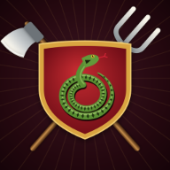
В RuStore
Оборона Гадюкино
От трёх изб у болота до мегаполиса: 10 глав, 70 уровней, тысяча лет истории. Игра заново перерисована вручную.
Трилогия tower defense для Android
Тысячу лет подряд кто-нибудь пытается захватить Гадюкино: волки, печенеги, Наполеон, взбунтовавшийся ИИ, пришельцы и даже проклятые боги. Гадюкино ни разу не сдало околицу. Помогите и вы.

От трёх изб у болота до мегаполиса: 10 глав, 70 уровней, тысяча лет истории. Игра заново перерисована вручную.
Мегаполис против армий будущего: от наших дней до XXV века. Дроны, штурмовики, ИИ, который извиняется перед атакой.
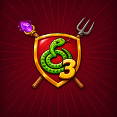
Хроноускоритель сломался, и Гадюкино провалилось в мир меча и магии. Гоблины, орки, гномы, эльфы, драконы — и боги.
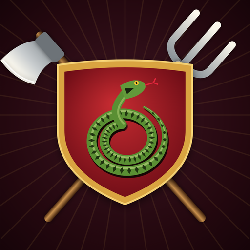
Часть первая · от Руси до наших дней
Tower defense о русской деревне, которая за тысячу лет вырастает от трёх изб у болота до мегаполиса. Расставляйте защитников вдоль дорог, усиливайте их и не пропускайте врага к околице.
Почти вся первая часть нарисована заново, вручную и в одном стиле:
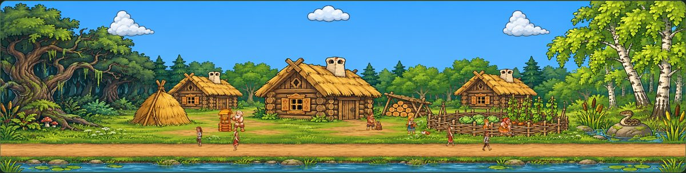
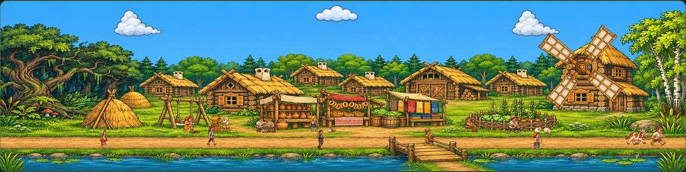
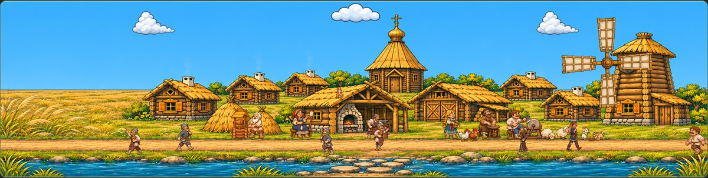
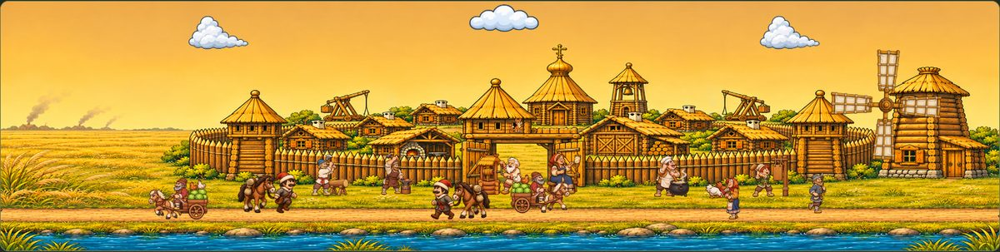
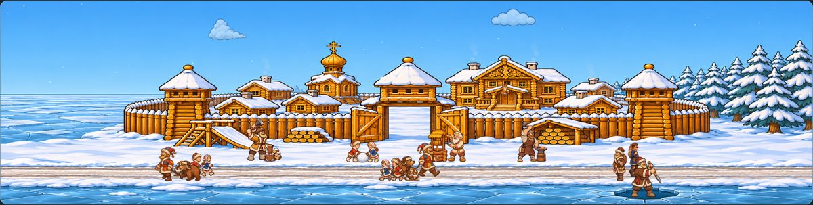
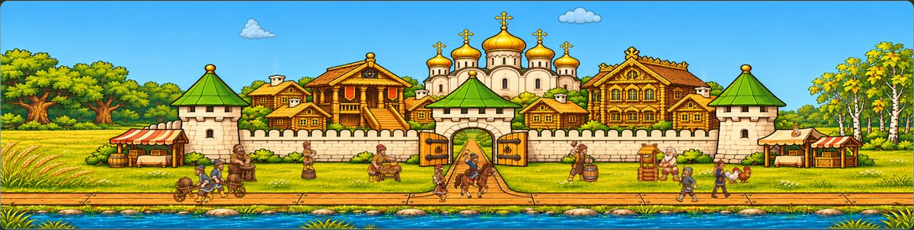
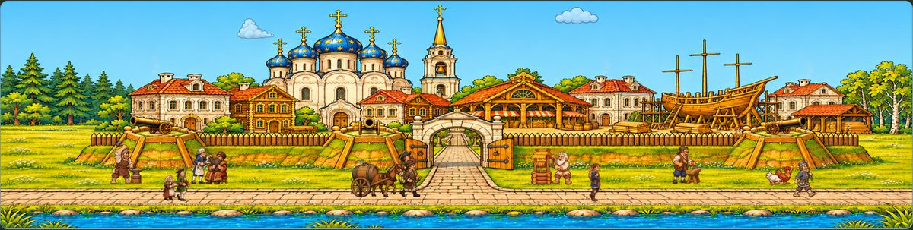
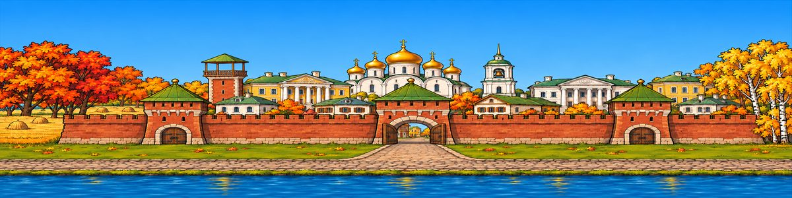
Листайте вбок →
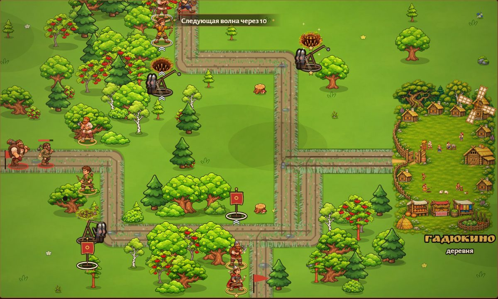
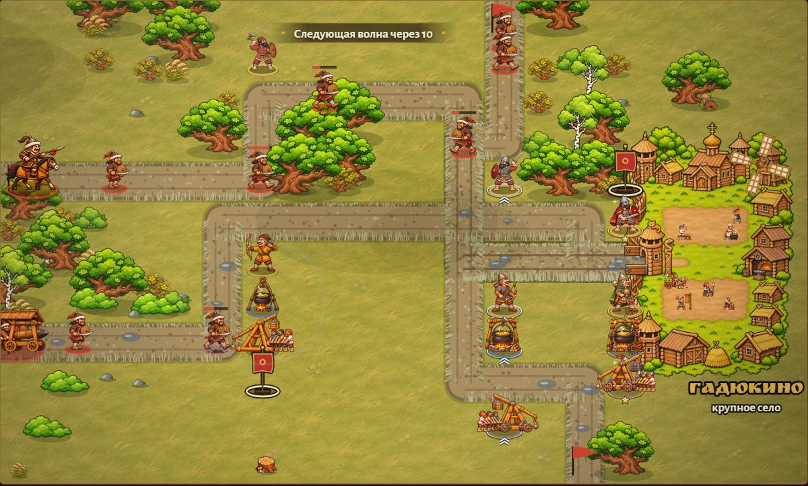
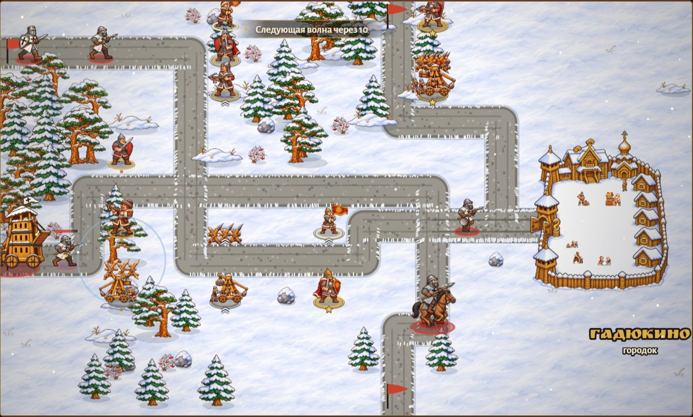
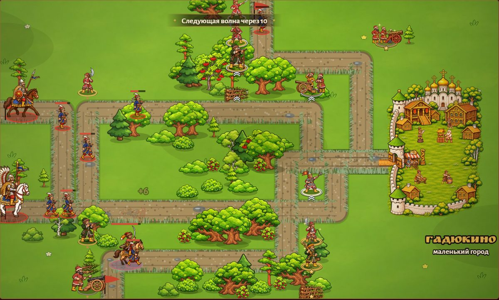
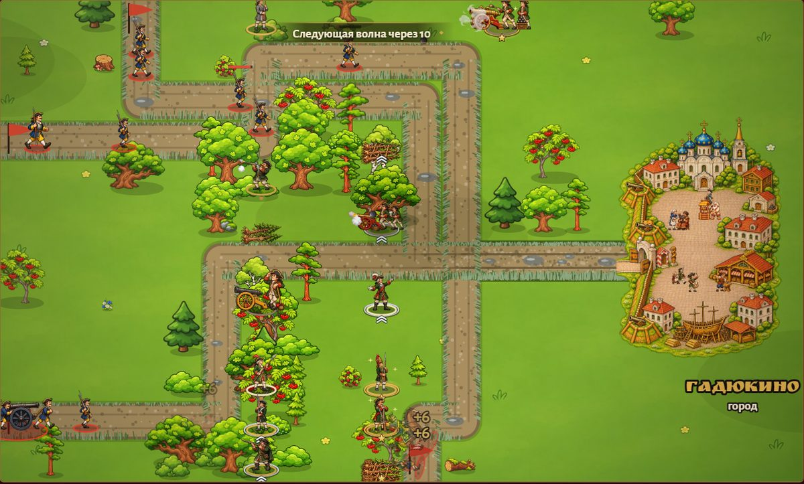
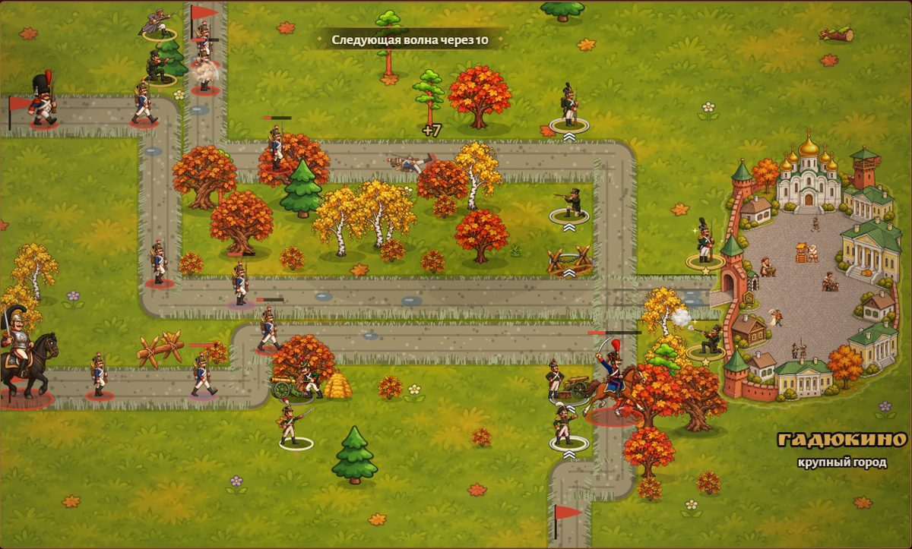
| Глава | Эпоха | Гадюкино | Враг |
|---|---|---|---|
| I | Глухая старина | Деревенька | Хищники: лисы, волки, кабаны, медведь-шатун |
| II | Лихие времена | Деревня | Разбойники и их атаман |
| III | X век | Село | Печенеги |
| IV | XIII век | Крупное село | Татаро-монголы |
| V | XIII век | Городок | Тевтонские и ливонские крестоносцы |
| VI | XVII век | Маленький город | Речь Посполитая |
| VII | XVIII век | Город | Шведы |
| VIII | 1812 год | Крупный город | Армия Наполеона |
| IX | 1941–1945 | Огромный город | Немецко-фашистские захватчики |
| X | Наши дни | Мегаполис | Враждебный Альянс |
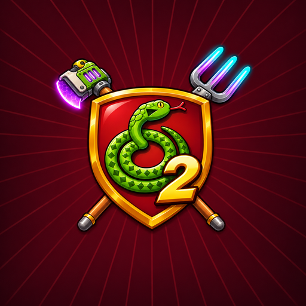
Часть вторая · от наших дней до XXV века
Гадюкино стало мегаполисом с проспектом Ерофея и дизелёбусом по расписанию, но враги не кончились. Танки Враждебного Альянса, городской ИИ, который вежливо извиняется перед каждой атакой, корпорация «Глобальный добрый мир» с добрыми дубинками — а в конце инопланетный улей, и Гадюкино защищает уже всю Землю.
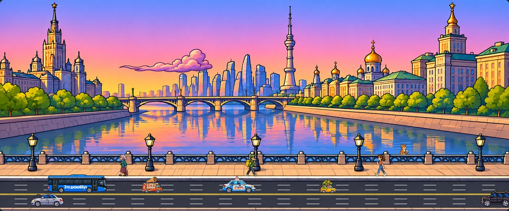
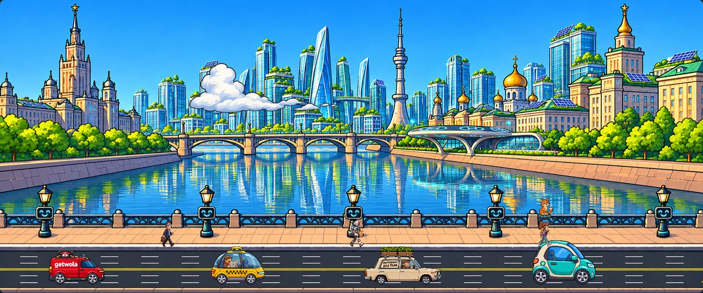
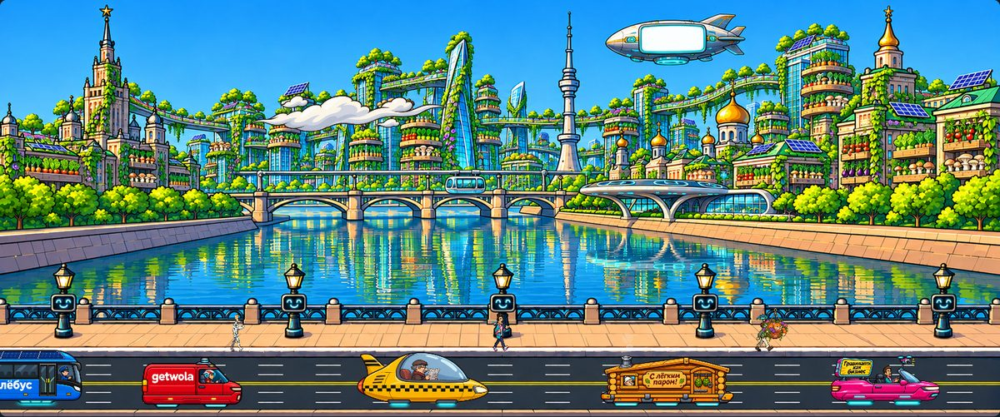
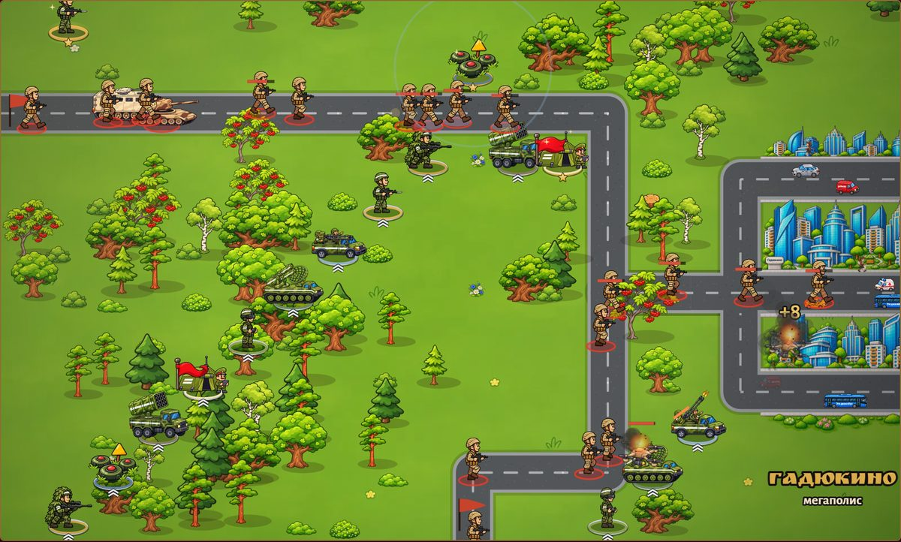
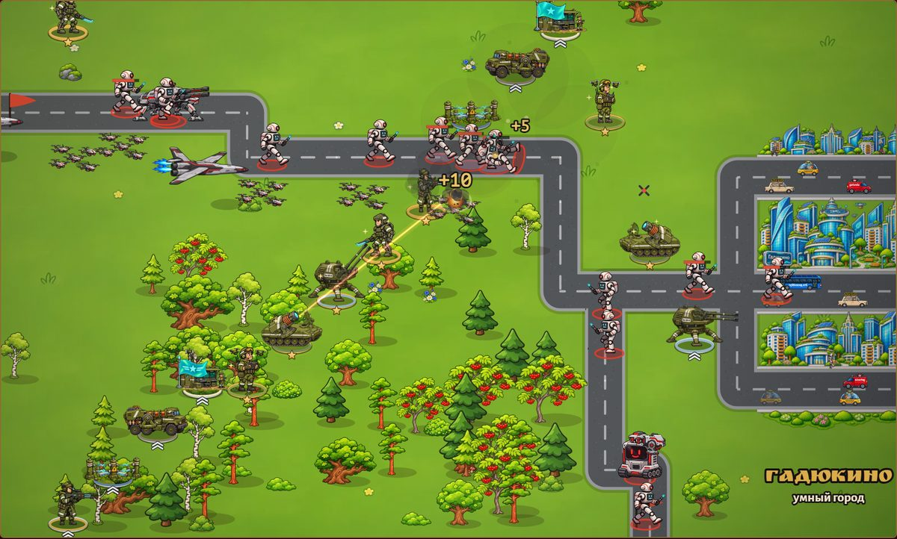
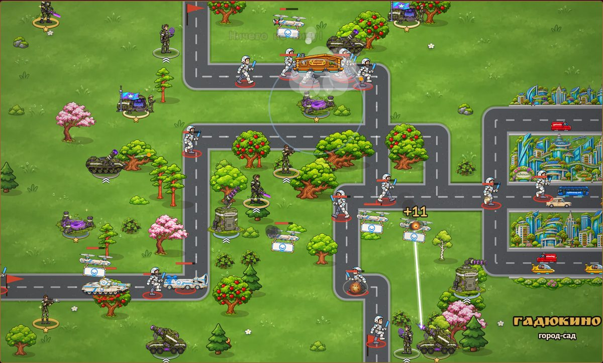
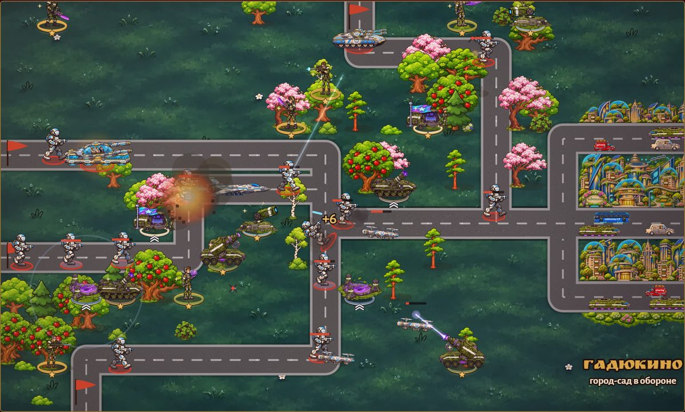
Часть третья · мир меча и магии
Галактический институт Гадюкино запустил Хроноускоритель, чтобы шаурма приезжала раньше, чем её закажут. Что-то пошло не так. От столицы Галактики осталось шесть изб, коза Марта и сорок упрямых жителей, а вокруг — Чародол: гоблины, орки, гномы, эльфы, драконы и спящие проклятые боги.
7 глав, 63 уровня, магия, которая растёт от главы к главе, и главная идея: вчерашний враг — завтрашний союзник.
Открыть сайт ЧародолаДа. Все части «Обороны Гадюкино» бесплатны, встроенных покупок нет. Иногда между уровнями показывается реклама, а за просмотр ролика по желанию можно получить бонус: монеты от купца или звезду кузнеца.
Нет, игры работают без интернета: в дороге, на даче, в самолёте. Интернет нужен только для показа рекламы.
Первая часть — в RuStore: rustore.ru/catalog/app/ru.gadyukino.oborona. Вторая и третья части скоро появятся там же.
С любой: у каждой части своя история и своё обучение. Но по порядку смешнее — во второй и третьей частях много отсылок к первой: староста Ерофей, коза Марта, вилы из музея.
Игра заново перерисована вручную: новые поля боя, деревня растёт прямо у околицы, живые обложки глав с жителями и прохожими, бойцы трёх уровней улучшения. Осадные башни разваливаются на куски, пушки стреляют с дымом, а враги и староста Ерофей перекидываются шутками прямо в бою.
На телефонах и планшетах с Android 7.0 и новее. Интерфейс подстраивается под экран, играть удобно горизонтально.
Пока игры выходят только для Android в RuStore.
Возрастная маркировка 12+: в играх есть сражения, но без натурализма и крови. Графика рисованная, юмор добрый.